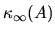
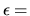
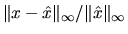

The conventional error analysis of linear
equation solving goes as follows.
Let Ax=b be the system to be solved. Let  be the solution
computed by LAPACK (or LINPACK) using any of their linear equation solvers.
Let r be
the residual
.
In the absence of rounding error r
would be zero and
be the solution
computed by LAPACK (or LINPACK) using any of their linear equation solvers.
Let r be
the residual
.
In the absence of rounding error r
would be zero and  would equal x; with rounding error one can
only say the following:
would equal x; with rounding error one can
only say the following:
The normwise backward error of the computed solution, with respect to the infinity norm, is the pair E,f which minimizes
subject to the constraint. The minimal value of is given by
One can show that the computed solutionis bounded by
In the first code fragment in the last section, , which is in the numerical example, is approximated by . Approximations of  -- or, strictly speaking, its reciprocal RCOND -- are returned by computational routines xyyCON (subsection 2.4.1) or driver routines xyySVX (subsection 2.3.1). The code fragment makes sure RCOND is at least  EPSMCH to avoid overflow in computing ERRBD. This limits ERRBD to a maximum of 1, which is no loss of generality since a relative error of 1 or more indicates the same thing: a complete loss of accuracy. Note that the value of RCOND returned by xyySVX may apply to a linear system obtained from Ax=b by equilibration, i.e. scaling the rows and columns of A in order to make the condition number smaller. This is the case in the second code fragment in the last section, where the program chose to scale the rows by the factors returned in and scale the columns by the factors returned in , resulting in .
As stated in section 4.3.2,
this approach does not respect the presence
of zero or tiny entries in A. In contrast,
the LAPACK computational routines
xyyRFS (subsection 2.4.1) or driver routines xyySVX
(subsection 2.3.1) will (except in rare cases)
compute a solution  with the following properties:
with the following properties:
The componentwise backward error of the computed solution
(where we interpret 0/0 as 0) subject to the constraint
One can show that for most problems the
The routines xyyRFS and xyySVX return , which is called BERR (for Backward ERRor), and a bound on the the actual error , called FERR (for Forward ERRor), as in the second code fragment in the last section. FERR is actually calculated by the following formula, which can be smaller than the bound given above:
Here, is the computed value of the residual , and the norm in the numerator is estimated using the same estimation subroutine used for RCOND.
The value of BERR for the example in the last section is .
Even in the rare cases where xyyRFS fails to make BERR close to its minimum, the error bound FERR may remain small. See [6] for details.